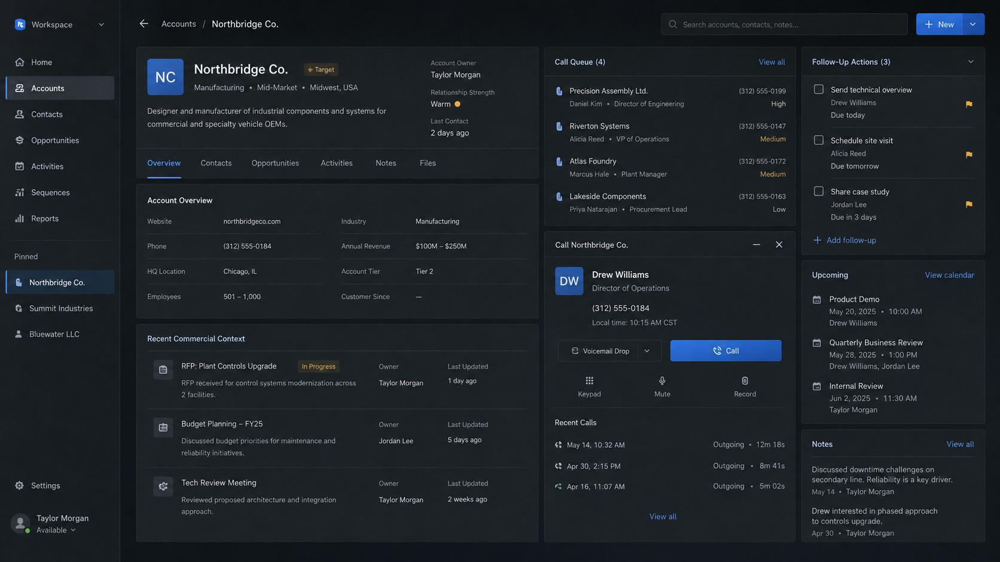
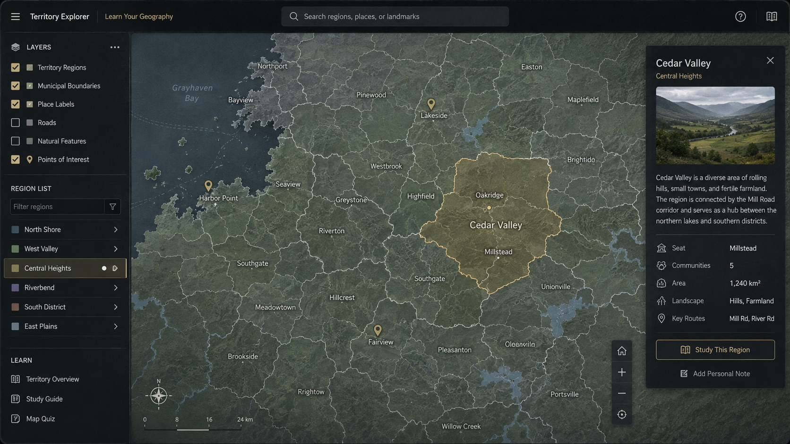

In active development
Sidecar
A focused sales workspace built around the real work of managing accounts, calls, and commercial follow-up across existing company systems.

Independent software studio / Montreal,Quebec
I build focused tools for distributors, manufacturers, and other operational businesses—especially where an overgrown spreadsheet is doing the job of a proper system.
02 / Selected work
Two tools built from problems I encountered firsthand.
In active development
A focused sales workspace built around the real work of managing accounts, calls, and commercial follow-up across existing company systems.

Prototype
A map-first tool for learning and visualizing the geographic regions, municipalities, and boundaries of a sales territory.

About
I work close to real sales and operational processes, and build small software around problems I can directly understand.
If there’s a spreadsheet, internal workflow, or repetitive task that keeps causing friction, I’d be glad to hear how it works.
Start a conversation